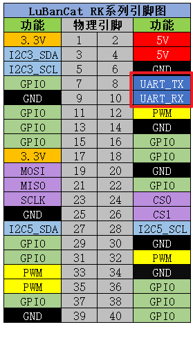
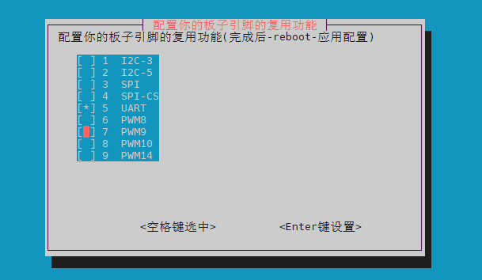
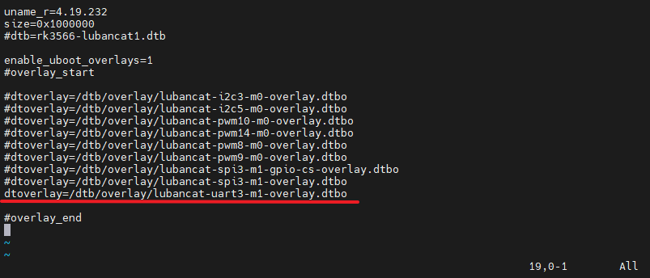
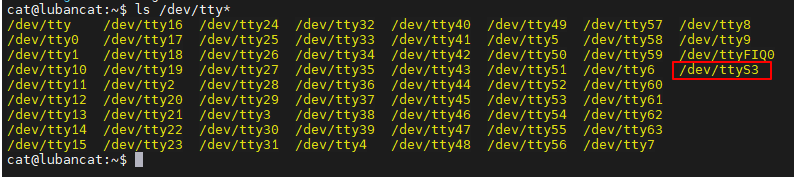
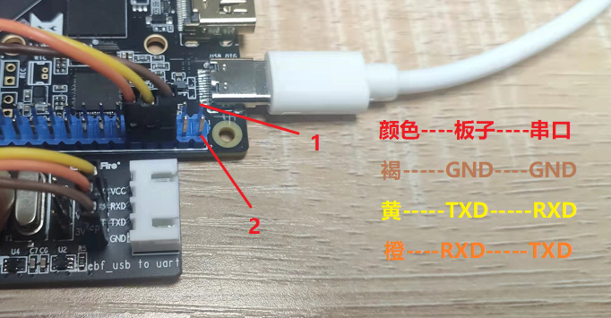
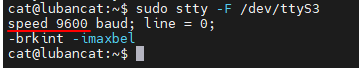
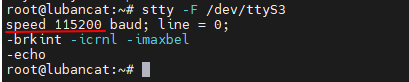
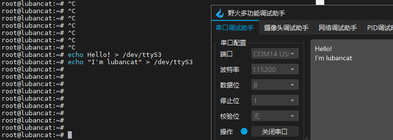
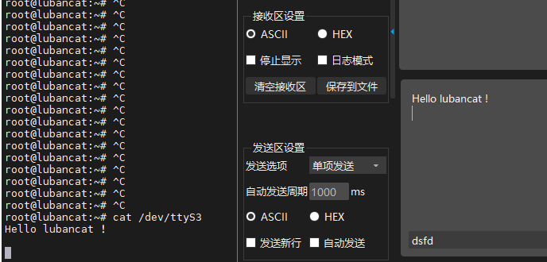

<!DOCTYPE lake>
<h1 data-lake-id="Qhg0J" data-lake-index-type="2" id="Qhg0J"><span data-lake-id="u8614cdcc" id="u8614cdcc">串口引脚关系</span></h1><p data-lake-id="u818dc82d" id="u818dc82d"><span class="lake-fontsize-12" data-lake-id="u8486460b" id="u8486460b" style="color: rgb(64, 64, 64); background-color: rgb(252, 252, 252)">其中串口的引脚关系如下表所示</span></p><table class="lake-table" data-lake-id="ihiFj" id="ihiFj" margin="true" style="width: 300px"><colgroup><col width="100"/><col width="100"/><col width="100"/></colgroup><tbody><tr data-lake-id="ub8b627d3" id="ub8b627d3"><td data-lake-id="u0c699ee9" id="u0c699ee9"><p data-lake-id="uf71715dc" id="uf71715dc"><strong><span class="lake-fontsize-11" data-lake-id="u6f5d7366" id="u6f5d7366" style="color: rgb(64, 64, 64); background-color: rgb(252, 252, 252)">串口</span></strong></p></td><td data-lake-id="u82afc974" id="u82afc974"><p data-lake-id="u9591d496" id="u9591d496"><strong><span class="lake-fontsize-11" data-lake-id="u2a9154f5" id="u2a9154f5" style="color: rgb(64, 64, 64); background-color: rgb(252, 252, 252)">引脚</span></strong></p></td><td data-lake-id="u5e12528c" id="u5e12528c"><p data-lake-id="uea8d8555" id="uea8d8555"><strong><span class="lake-fontsize-11" data-lake-id="u5d55b621" id="u5d55b621" style="color: rgb(64, 64, 64); background-color: rgb(252, 252, 252)">功能</span></strong></p></td></tr><tr data-lake-id="u78dfbcd4" id="u78dfbcd4"><td data-lake-id="u9bab50b9" id="u9bab50b9" style="background-color: rgb(243, 246, 246)"><p data-lake-id="uf4b232ea" id="uf4b232ea"><span class="lake-fontsize-11" data-lake-id="u9ef3ccd6" id="u9ef3ccd6" style="color: rgb(64, 64, 64); background-color: rgb(252, 252, 252)">TXD</span></p></td><td data-lake-id="u8d145e8f" id="u8d145e8f" style="background-color: rgb(243, 246, 246)"><p data-lake-id="uc0661950" id="uc0661950"><span class="lake-fontsize-11" data-lake-id="u44e1a8dd" id="u44e1a8dd" style="color: rgb(64, 64, 64); background-color: rgb(252, 252, 252)">8</span></p></td><td data-lake-id="u1c98e479" id="u1c98e479" style="background-color: rgb(243, 246, 246)"><p data-lake-id="u0c045a04" id="u0c045a04"><span class="lake-fontsize-11" data-lake-id="uc307aed8" id="uc307aed8" style="color: rgb(64, 64, 64); background-color: rgb(252, 252, 252)">发送信号线</span></p></td></tr><tr data-lake-id="u68dcd2c4" id="u68dcd2c4"><td data-lake-id="ub94a10e8" id="ub94a10e8"><p data-lake-id="u28ffdb55" id="u28ffdb55"><span class="lake-fontsize-11" data-lake-id="u793e8c2b" id="u793e8c2b" style="color: rgb(64, 64, 64); background-color: rgb(252, 252, 252)">RXD</span></p></td><td data-lake-id="uc3efbdd2" id="uc3efbdd2"><p data-lake-id="uffced31c" id="uffced31c"><span class="lake-fontsize-11" data-lake-id="u29cbd37b" id="u29cbd37b" style="color: rgb(64, 64, 64); background-color: rgb(252, 252, 252)">10</span></p></td><td data-lake-id="u3bfb4037" id="u3bfb4037"><p data-lake-id="u2b0a01c1" id="u2b0a01c1"><span class="lake-fontsize-11" data-lake-id="ua365ffa1" id="ua365ffa1" style="color: rgb(64, 64, 64); background-color: rgb(252, 252, 252)">接受信号线</span></p></td></tr></tbody></table><p data-lake-id="ud51704c9" id="ud51704c9"><span class="lake-fontsize-12" data-lake-id="u6dd21c01" id="u6dd21c01" style="color: rgb(64, 64, 64); background-color: rgb(252, 252, 252)">对应实物的40pin接口</span></p><p data-lake-id="u94840441" id="u94840441"></p><ul list="ued728a7c"><li data-lake-id="udf05b3aa" fid="u0ae8f46b" id="udf05b3aa"><span class="lake-fontsize-12" data-lake-id="u3125a823" id="u3125a823" style="color: rgb(64, 64, 64); background-color: rgb(252, 252, 252)">LubanCat-Zero系列使用的是uart8</span></li><li data-lake-id="u4b42dc16" fid="u0ae8f46b" id="u4b42dc16"><span class="lake-fontsize-12" data-lake-id="u3f1a323a" id="u3f1a323a" style="color: rgb(64, 64, 64); background-color: rgb(252, 252, 252)">LubanCat-1系列和LubanCat-2系列使用的是uart3</span></li></ul><h1 data-lake-id="gZEBK" data-lake-index-type="2" id="gZEBK"><span data-lake-id="u38ac9606" id="u38ac9606" style="color: rgb(64, 64, 64); background-color: rgb(252, 252, 252)">使能串口接口</span></h1><h2 data-lake-id="O5uG8" data-lake-index-type="2" id="O5uG8"><span data-lake-id="u959f5236" id="u959f5236">方法一</span></h2><span class="yuque-card-unsupported">[codeblock]</span><p data-lake-id="u9d030151" id="u9d030151"><strong><span data-lake-id="u7cfdba1e" id="u7cfdba1e">打开串口</span></strong></p><ol list="u01a5bb08"><li data-lake-id="uddc83eba" fid="ub820cd1f" id="uddc83eba"><span class="lake-fontsize-12" data-lake-id="u37dc7181" id="u37dc7181" style="color: rgb(64, 64, 64); background-color: rgb(252, 252, 252)">使用方向键移动光标到</span><span class="lake-fontsize-12" data-lake-id="u1f63fcad" id="u1f63fcad" style="color: rgb(64, 64, 64); background-color: rgb(252, 252, 252)"> </span><span class="lake-fontsize-9" data-lake-id="u468b94c1" id="u468b94c1" style="color: rgb(231, 76, 60); background-color: rgb(252, 252, 252)">UART</span></li><li data-lake-id="u350c71e2" fid="ub820cd1f" id="u350c71e2"><span class="lake-fontsize-12" data-lake-id="ud252ef07" id="ud252ef07" style="color: rgb(64, 64, 64); background-color: rgb(252, 252, 252)">按</span><span class="lake-fontsize-12" data-lake-id="u5a3bb128" id="u5a3bb128" style="color: rgb(64, 64, 64); background-color: rgb(252, 252, 252)"> </span><strong><span class="lake-fontsize-12" data-lake-id="u87cb3bc1" id="u87cb3bc1" style="color: rgb(64, 64, 64); background-color: rgb(252, 252, 252)">“空格键”</span></strong><span class="lake-fontsize-12" data-lake-id="ubab070c0" id="ubab070c0" style="color: rgb(64, 64, 64); background-color: rgb(252, 252, 252)"> </span><span class="lake-fontsize-12" data-lake-id="uf4cbb937" id="uf4cbb937" style="color: rgb(64, 64, 64); background-color: rgb(252, 252, 252)">选中UART(出现</span><span class="lake-fontsize-12" data-lake-id="u1d71121e" id="u1d71121e" style="color: rgb(64, 64, 64); background-color: rgb(252, 252, 252)"> </span><strong><span class="lake-fontsize-12" data-lake-id="u0ea7012c" id="u0ea7012c" style="color: rgb(64, 64, 64); background-color: rgb(252, 252, 252)">“*”</span></strong><span class="lake-fontsize-12" data-lake-id="ua9c54689" id="ua9c54689" style="color: rgb(64, 64, 64); background-color: rgb(252, 252, 252)"> </span><span class="lake-fontsize-12" data-lake-id="u0145bc13" id="u0145bc13" style="color: rgb(64, 64, 64); background-color: rgb(252, 252, 252)">)，如下图</span></li><li data-lake-id="ua6b2cbb0" fid="ub820cd1f" id="ua6b2cbb0"><span class="lake-fontsize-12" data-lake-id="u552d5969" id="u552d5969" style="color: rgb(64, 64, 64); background-color: rgb(252, 252, 252)">按</span><span class="lake-fontsize-12" data-lake-id="u8127035c" id="u8127035c" style="color: rgb(64, 64, 64); background-color: rgb(252, 252, 252)"> </span><strong><span class="lake-fontsize-12" data-lake-id="uc1af4209" id="uc1af4209" style="color: rgb(64, 64, 64); background-color: rgb(252, 252, 252)">“确认键”</span></strong><span class="lake-fontsize-12" data-lake-id="u91f10fe1" id="u91f10fe1" style="color: rgb(64, 64, 64); background-color: rgb(252, 252, 252)"> </span><span class="lake-fontsize-12" data-lake-id="u433db024" id="u433db024" style="color: rgb(64, 64, 64); background-color: rgb(252, 252, 252)">进行设置</span></li><li data-lake-id="u4c64f37e" fid="ub820cd1f" id="u4c64f37e"><span class="lake-fontsize-12" data-lake-id="u4360dc75" id="u4360dc75" style="color: rgb(64, 64, 64); background-color: rgb(252, 252, 252)">按 </span><strong><span class="lake-fontsize-12" data-lake-id="u15fcf157" id="u15fcf157" style="color: rgb(64, 64, 64); background-color: rgb(252, 252, 252)">“Esc键”</span></strong><span class="lake-fontsize-12" data-lake-id="ubd8dd520" id="ubd8dd520" style="color: rgb(64, 64, 64); background-color: rgb(252, 252, 252)"> 退出到终端，运行 </span><strong><span class="lake-fontsize-12" data-lake-id="uc247849a" id="uc247849a" style="color: rgb(64, 64, 64); background-color: rgb(252, 252, 252)">sudo reboot</span></strong><span class="lake-fontsize-12" data-lake-id="u22e216ce" id="u22e216ce" style="color: rgb(64, 64, 64); background-color: rgb(252, 252, 252)"> 进行重启应用</span></li></ol><p data-lake-id="uf3e3e087" id="uf3e3e087"></p><h2 data-lake-id="M6EaU" data-lake-index-type="2" id="M6EaU"><span data-lake-id="u6777a750" id="u6777a750">方法二</span></h2><table class="lake-table" data-lake-id="iTgod" id="iTgod" margin="true" style="width: 200px"><colgroup><col width="100"/><col width="100"/></colgroup><tbody><tr data-lake-id="ud6d169de" id="ud6d169de"><td data-lake-id="u0e9ff353" id="u0e9ff353"><p data-lake-id="u57bc98f1" id="u57bc98f1"><strong><span class="lake-fontsize-11" data-lake-id="u24160498" id="u24160498" style="color: rgb(64, 64, 64); background-color: rgb(252, 252, 252)">板卡</span></strong></p></td><td data-lake-id="u35339938" id="u35339938"><p data-lake-id="uefd395a3" id="uefd395a3"><strong><span class="lake-fontsize-11" data-lake-id="u6bd522ea" id="u6bd522ea" style="color: rgb(64, 64, 64); background-color: rgb(252, 252, 252)">设备树插件配置文件</span></strong></p></td></tr><tr data-lake-id="uf01d96a6" id="uf01d96a6"><td data-lake-id="u6b109091" id="u6b109091" style="background-color: rgb(243, 246, 246)"><p data-lake-id="uaabb953e" id="uaabb953e"><span class="lake-fontsize-11" data-lake-id="ud55ae25f" id="ud55ae25f" style="color: rgb(64, 64, 64); background-color: rgb(252, 252, 252)">LubanCat-Zero-W</span></p></td><td data-lake-id="ub51f4e12" id="ub51f4e12" style="background-color: rgb(243, 246, 246)"><p data-lake-id="ub458e24f" id="ub458e24f"><span class="lake-fontsize-11" data-lake-id="u9c6a4ea5" id="u9c6a4ea5" style="color: rgb(64, 64, 64); background-color: rgb(252, 252, 252)">uEnvLubanCatZW.txt</span></p></td></tr><tr data-lake-id="u0c986f6a" id="u0c986f6a"><td data-lake-id="u94f39a05" id="u94f39a05"><p data-lake-id="u2bf494b3" id="u2bf494b3"><span class="lake-fontsize-11" data-lake-id="uab704a76" id="uab704a76" style="color: rgb(64, 64, 64); background-color: rgb(252, 252, 252)">LubanCat-Zero-N</span></p></td><td data-lake-id="u54d77578" id="u54d77578"><p data-lake-id="u524e2107" id="u524e2107"><span class="lake-fontsize-11" data-lake-id="u826927ba" id="u826927ba" style="color: rgb(64, 64, 64); background-color: rgb(252, 252, 252)">uEnvLubanCatZN.txt</span></p></td></tr><tr data-lake-id="u1c85d653" id="u1c85d653"><td data-lake-id="u98a10a95" id="u98a10a95" style="background-color: rgb(243, 246, 246)"><p data-lake-id="u88fee05c" id="u88fee05c"><span class="lake-fontsize-11" data-lake-id="ufa9d7f11" id="ufa9d7f11" style="color: rgb(64, 64, 64); background-color: rgb(252, 252, 252)">LubanCat-1</span></p></td><td data-lake-id="u9ff31cf4" id="u9ff31cf4" style="background-color: rgb(243, 246, 246)"><p data-lake-id="u91a1d499" id="u91a1d499"><span class="lake-fontsize-11" data-lake-id="ufa73e3ba" id="ufa73e3ba" style="color: rgb(64, 64, 64); background-color: rgb(252, 252, 252)">uEnvLubanCat1.txt</span></p></td></tr><tr data-lake-id="u7109fcbf" id="u7109fcbf"><td data-lake-id="u4b9854db" id="u4b9854db"><p data-lake-id="ucf977e53" id="ucf977e53"><span class="lake-fontsize-11" data-lake-id="ufd006580" id="ufd006580" style="color: rgb(64, 64, 64); background-color: rgb(252, 252, 252)">LubanCat-1N</span></p></td><td data-lake-id="udfc57e57" id="udfc57e57"><p data-lake-id="u84a1cced" id="u84a1cced"><span class="lake-fontsize-11" data-lake-id="u8bcd2394" id="u8bcd2394" style="color: rgb(64, 64, 64); background-color: rgb(252, 252, 252)">uEnvLubanCat1N.txt</span></p></td></tr><tr data-lake-id="u5e3cd73e" id="u5e3cd73e"><td data-lake-id="ua8420c5e" id="ua8420c5e" style="background-color: rgb(243, 246, 246)"><p data-lake-id="u58e97e76" id="u58e97e76"><span class="lake-fontsize-11" data-lake-id="u54585deb" id="u54585deb" style="color: rgb(64, 64, 64); background-color: rgb(252, 252, 252)">LubanCat-2</span></p></td><td data-lake-id="ua43c2f55" id="ua43c2f55" style="background-color: rgb(243, 246, 246)"><p data-lake-id="u2aa95efd" id="u2aa95efd"><span class="lake-fontsize-11" data-lake-id="ud1bc54fe" id="ud1bc54fe" style="color: rgb(64, 64, 64); background-color: rgb(252, 252, 252)">uEnvLubanCat2.txt</span></p></td></tr><tr data-lake-id="ub8629402" id="ub8629402"><td data-lake-id="u1c942ad9" id="u1c942ad9"><p data-lake-id="u510b3388" id="u510b3388"><span class="lake-fontsize-11" data-lake-id="u8e5ed4aa" id="u8e5ed4aa" style="color: rgb(64, 64, 64); background-color: rgb(252, 252, 252)">新版LubanCat-2</span></p></td><td data-lake-id="ud3d394d1" id="ud3d394d1"><p data-lake-id="u9a3d33c1" id="u9a3d33c1"><span class="lake-fontsize-11" data-lake-id="u2fafa21f" id="u2fafa21f" style="color: rgb(64, 64, 64); background-color: rgb(252, 252, 252)">uEnvLubanCat2-V1.txt</span></p></td></tr><tr data-lake-id="u243a2f3a" id="u243a2f3a"><td data-lake-id="u55471f73" id="u55471f73" style="background-color: rgb(243, 246, 246)"><p data-lake-id="u0b2c29dc" id="u0b2c29dc"><span class="lake-fontsize-11" data-lake-id="u5556093c" id="u5556093c" style="color: rgb(64, 64, 64); background-color: rgb(252, 252, 252)">LubanCat-2N</span></p></td><td data-lake-id="u28efa855" id="u28efa855" style="background-color: rgb(243, 246, 246)"><p data-lake-id="ua85d4ae8" id="ua85d4ae8"><span class="lake-fontsize-11" data-lake-id="u428ec2d6" id="u428ec2d6" style="color: rgb(64, 64, 64); background-color: rgb(252, 252, 252)">uEnvLubanCat2N.txt</span></p></td></tr></tbody></table><p data-lake-id="u7644efb2" id="u7644efb2"><span class="lake-fontsize-12" data-lake-id="u0162e223" id="u0162e223" style="color: rgb(64, 64, 64); background-color: rgb(252, 252, 252)">可以通过打开</span><span class="lake-fontsize-12" data-lake-id="ue8dd3426" id="ue8dd3426" style="color: rgb(64, 64, 64); background-color: rgb(252, 252, 252)"> </span><strong><span class="lake-fontsize-12" data-lake-id="uc8f43672" id="uc8f43672" style="color: rgb(64, 64, 64); background-color: rgb(252, 252, 252)">/boot/uEnv/board.txt</span></strong><span class="lake-fontsize-12" data-lake-id="ub50331f0" id="ub50331f0" style="color: rgb(64, 64, 64); background-color: rgb(252, 252, 252)"> </span><span class="lake-fontsize-12" data-lake-id="u403c00b1" id="u403c00b1" style="color: rgb(64, 64, 64); background-color: rgb(252, 252, 252)">（board是你所用的板子的名称） 查看是否启用了uart相关设备设备树插件。</span></p><p data-lake-id="u0abb6e35" id="u0abb6e35"><span class="lake-fontsize-12" data-lake-id="ucdb73299" id="ucdb73299" style="color: rgb(64, 64, 64); background-color: rgb(252, 252, 252)">编辑文件，将带有 </span><strong><span class="lake-fontsize-12" data-lake-id="ue814579e" id="ue814579e" style="color: rgb(64, 64, 64); background-color: rgb(252, 252, 252)">uart</span></strong><span class="lake-fontsize-12" data-lake-id="u68145882" id="u68145882" style="color: rgb(64, 64, 64); background-color: rgb(252, 252, 252)"> (以uart3为例) 的那一行的注释符号去掉 如下图:</span></p><p data-lake-id="u0b7e0e71" id="u0b7e0e71"></p><p data-lake-id="u831f06a8" id="u831f06a8"><span class="lake-fontsize-12" data-lake-id="u8a0a4bba" id="u8a0a4bba" style="color: rgb(64, 64, 64); background-color: rgb(252, 252, 252)">然后重启激活设备</span></p><h1 data-lake-id="K4db9" data-lake-index-type="2" id="K4db9"><span data-lake-id="u29494c1b" id="u29494c1b" style="color: rgb(64, 64, 64); background-color: rgb(252, 252, 252)">检查串口设备</span></h1><p data-lake-id="u946c9a0f" id="u946c9a0f"><span class="lake-fontsize-12" data-lake-id="u9cc6e577" id="u9cc6e577" style="color: rgb(64, 64, 64); background-color: rgb(252, 252, 252)">查看串口有没有成功使能</span></p><span class="yuque-card-unsupported">[codeblock]</span><ul list="u8c1937e4"><li data-lake-id="u0d091907" fid="uabd11937" id="u0d091907"><span class="lake-fontsize-12" data-lake-id="u7893e462" id="u7893e462" style="color: rgb(64, 64, 64); background-color: rgb(252, 252, 252)">LubanCat-Zero系列使用的是ttyS8</span></li><li data-lake-id="u4759f8e8" fid="uabd11937" id="u4759f8e8"><span class="lake-fontsize-12" data-lake-id="u75067ea6" id="u75067ea6" style="color: rgb(64, 64, 64); background-color: rgb(252, 252, 252)">LubanCat-1系列和LubanCat-2系列使用的是ttyS3</span></li></ul><p data-lake-id="uc4293958" id="uc4293958"><span class="lake-fontsize-12" data-lake-id="ue31a8996" id="ue31a8996" style="color: rgb(64, 64, 64); background-color: rgb(252, 252, 252)">如下图(LubanCat-1):</span></p><p data-lake-id="ub94c4ccb" id="ub94c4ccb"></p><h1 data-lake-id="gC79p" data-lake-index-type="2" id="gC79p"><span data-lake-id="u790f2020" id="u790f2020" style="color: rgb(64, 64, 64); background-color: rgb(252, 252, 252)">串口通讯</span></h1><p data-lake-id="u56c778c8" id="u56c778c8"><span class="lake-fontsize-12" data-lake-id="uf996ae57" id="uf996ae57" style="color: rgb(64, 64, 64); background-color: rgb(252, 252, 252)">使用板卡上的串口3进行实验，对应的设备文件为/dev/ttyS3。 对tty的设备文件直接读写就可以控制设备通过串口接收或发送数据</span></p><h2 data-lake-id="H51Hm" data-lake-index-type="2" id="H51Hm"><span data-lake-id="u0d3814a7" id="u0d3814a7" style="color: rgb(64, 64, 64); background-color: rgb(252, 252, 252)">连接串口</span></h2><p data-lake-id="u7e7b12c2" id="u7e7b12c2"><span class="lake-fontsize-12" data-lake-id="ubae677ec" id="ubae677ec" style="color: rgb(64, 64, 64); background-color: rgb(252, 252, 252)">实验前需要使用串口线或USB转串口线把它与板卡与电脑连接起来。</span></p><ul list="u4aac0741"><li data-lake-id="u92aa18c9" fid="u76625f68" id="u92aa18c9"><span class="lake-fontsize-12" data-lake-id="u4dcc9629" id="u4dcc9629" style="color: rgb(64, 64, 64); background-color: rgb(252, 252, 252)">板子 - 电脑</span></li><li data-lake-id="u4faef53e" fid="u76625f68" id="u4faef53e"><span class="lake-fontsize-12" data-lake-id="u3cf0ff11" id="u3cf0ff11" style="color: rgb(64, 64, 64); background-color: rgb(252, 252, 252)">TXD — RXD</span></li><li data-lake-id="u1cc3d019" fid="u76625f68" id="u1cc3d019"><span class="lake-fontsize-12" data-lake-id="ubf4731eb" id="ubf4731eb" style="color: rgb(64, 64, 64); background-color: rgb(252, 252, 252)">RXD — TXD</span></li><li data-lake-id="u5c37388d" fid="u76625f68" id="u5c37388d"><span class="lake-fontsize-12" data-lake-id="u5798a688" id="u5798a688" style="color: rgb(64, 64, 64); background-color: rgb(252, 252, 252)">GND — GND</span></li></ul><p data-lake-id="u2e66d83a" id="u2e66d83a"></p><h2 data-lake-id="fcJYQ" data-lake-index-type="2" id="fcJYQ"><span data-lake-id="u9a7a3c64" id="u9a7a3c64" style="color: rgb(64, 64, 64); background-color: rgb(252, 252, 252)">查询串口3的通信参数</span></h2><p data-lake-id="ua0c2aae9" id="ua0c2aae9"><span class="lake-fontsize-12" data-lake-id="u9a8f3c07" id="u9a8f3c07" style="color: rgb(64, 64, 64); background-color: rgb(252, 252, 252)">串口3外设使能后，在/dev目录下生成ttyS3设备文件，用stty工具查询其通信参数</span></p><span class="yuque-card-unsupported">[codeblock]</span><p data-lake-id="u2adf46e3" id="u2adf46e3"><span class="lake-fontsize-12" data-lake-id="ub63d3edd" id="ub63d3edd" style="color: rgb(64, 64, 64); background-color: rgb(252, 252, 252)">如下图:</span></p><p data-lake-id="u186c23ec" id="u186c23ec"></p><h2 data-lake-id="EHYkr" data-lake-index-type="2" id="EHYkr"><span data-lake-id="u02a81a35" id="u02a81a35" style="color: rgb(64, 64, 64); background-color: rgb(252, 252, 252)">修改串口波特率</span></h2><span class="yuque-card-unsupported">[codeblock]</span><p data-lake-id="u29032b4e" id="u29032b4e"><span class="lake-fontsize-12" data-lake-id="uda53951b" id="uda53951b" style="color: rgb(64, 64, 64); background-color: rgb(252, 252, 252)">如下图:</span></p><p data-lake-id="uf54fd05f" id="uf54fd05f"></p><h2 data-lake-id="SjEG8" data-lake-index-type="2" id="SjEG8"><span data-lake-id="u1693312e" id="u1693312e" style="color: rgb(64, 64, 64); background-color: rgb(252, 252, 252)">关闭回显</span></h2><p data-lake-id="u05d29cf2" id="u05d29cf2"><span class="lake-fontsize-12" data-lake-id="u39b6cc43" id="u39b6cc43" style="color: rgb(64, 64, 64); background-color: rgb(252, 252, 252)">默认串口是开启回显的 可以使用以下命令关闭回显</span></p><span class="yuque-card-unsupported">[codeblock]</span><h1 data-lake-id="VZ4hx" data-lake-index-type="2" id="VZ4hx"><span data-lake-id="ub0f0054a" id="ub0f0054a" style="color: rgb(64, 64, 64); background-color: rgb(252, 252, 252)">与Windows主机通讯</span></h1><p data-lake-id="u9afd0546" id="u9afd0546"><span class="lake-fontsize-12" data-lake-id="u70a86123" id="u70a86123" style="color: rgb(64, 64, 64); background-color: rgb(252, 252, 252)">配置好串口调试助手后，尝试使用如下命令测试发送数据：</span></p><span class="yuque-card-unsupported">[codeblock]</span><p data-lake-id="u4e8267a6" id="u4e8267a6"><span class="lake-fontsize-12" data-lake-id="ua8c18125" id="ua8c18125" style="color: rgb(64, 64, 64); background-color: rgb(252, 252, 252)">如下图:</span></p><p data-lake-id="u8c9700da" id="u8c9700da"></p><p data-lake-id="u1d830a1c" id="u1d830a1c"><span class="lake-fontsize-12" data-lake-id="u69a79d41" id="u69a79d41" style="color: rgb(64, 64, 64); background-color: rgb(252, 252, 252)">可以看到，往/dev/ttyS3设备文件写入的内容会直接通过串口线发送至Winodws的主机。</span></p><p data-lake-id="u5a614f89" id="u5a614f89"><span class="lake-fontsize-12" data-lake-id="u01f4456e" id="u01f4456e" style="color: rgb(64, 64, 64); background-color: rgb(252, 252, 252)">而读取设备文件则可接收Winodws主机发往板卡的内容，可以使用cat命令来读取：</span></p><span class="yuque-card-unsupported">[codeblock]</span><p data-lake-id="u47baa7e1" id="u47baa7e1"><span class="lake-fontsize-12" data-lake-id="u83c3ef52" id="u83c3ef52" style="color: rgb(64, 64, 64); background-color: rgb(252, 252, 252)">如下图:</span></p><p data-lake-id="uac77821a" id="uac77821a"></p><p data-lake-id="u11deddbf" id="u11deddbf"><span class="lake-fontsize-12" data-lake-id="ua18a90dc" id="ua18a90dc" style="color: rgb(64, 64, 64); background-color: rgb(252, 252, 252)">Hello lubancat!</span></p>